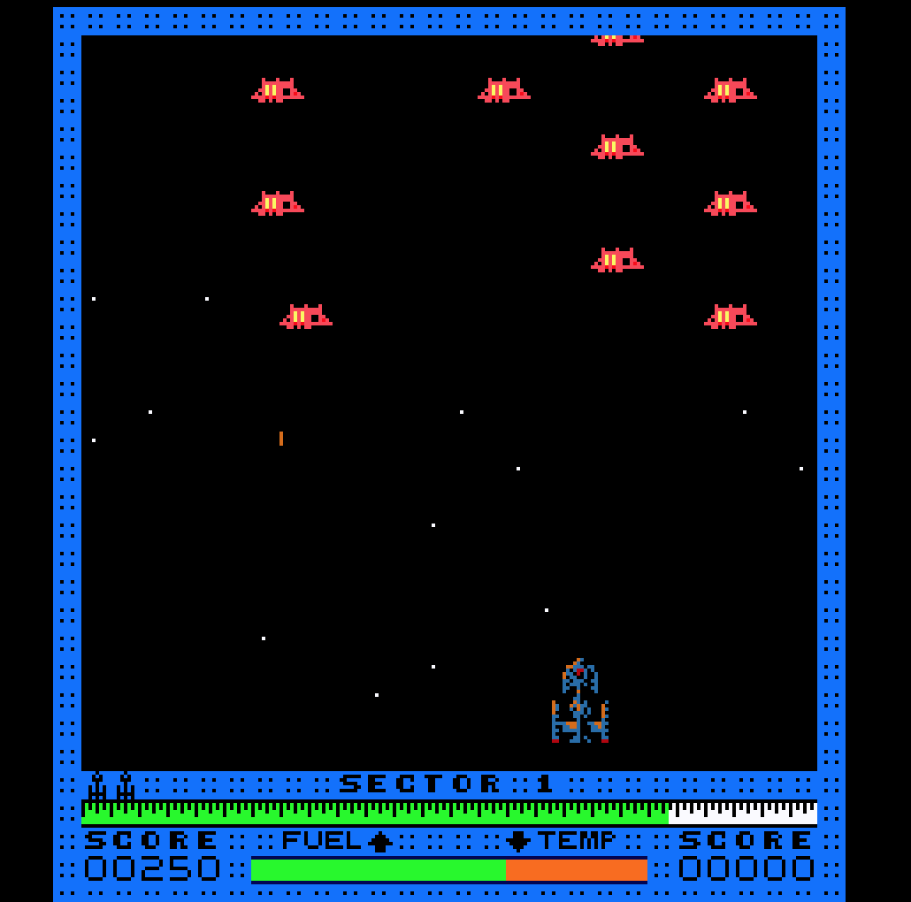
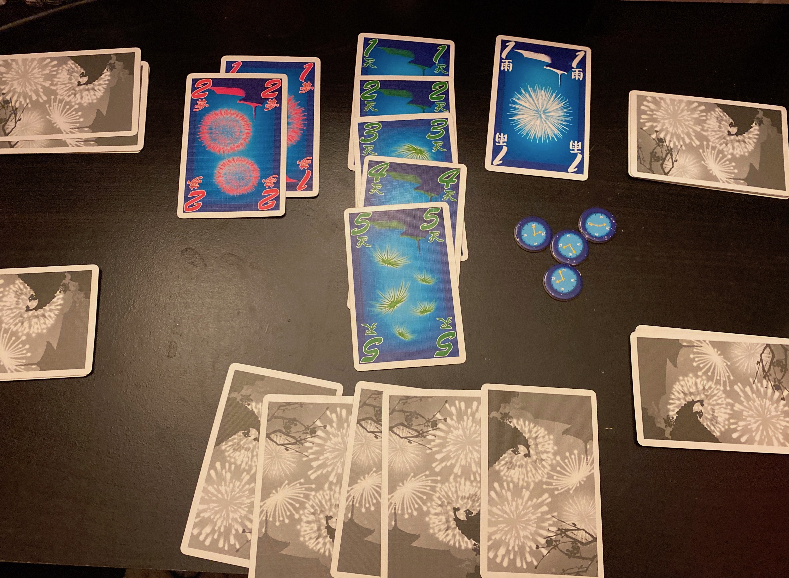
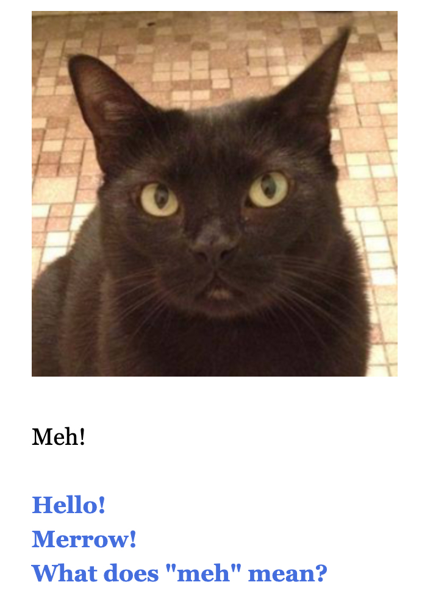
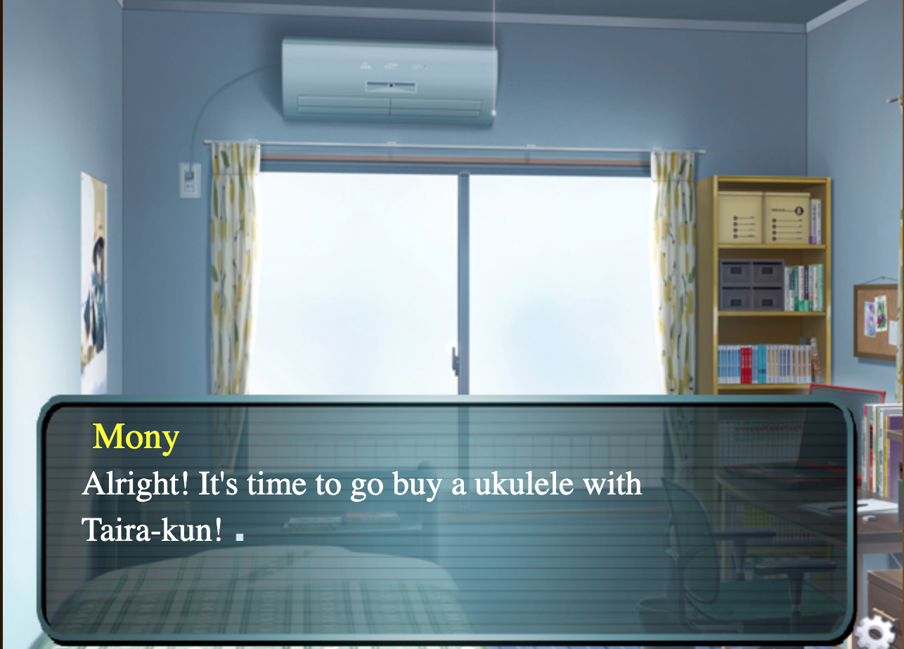
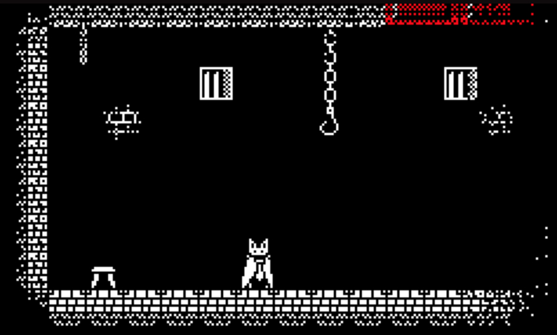

Blog 1
Internet Arcade-Astro blaster
I really enjoyed playing Astro Blaster. At first, I was not sure how to play it because the list on the bottom doesn't display the actual shooting control. After reading the comments on the bottom, I learned that the control button is the one to shoot. Other than that, the game is pretty straightforward and entertaining. I did play quite a bit but did not get far into the game. It definitely reminds me of other old school games I've watched my older brothers play. Similar games they would play were mainly played on computers. The game setup is not very different to many basic one and two player game. Anyone can absolutely enjoy it although it is very challenging. Playing this game on the computer does give it a different feel. It didn't feel as comfortable and also the button structure could be explained better. However, for being an emulator based game onto a laptop, it is not bad at all. Although I did not reach far in the game, I think I will come back to play it again. Maybe next time I will have a better time and enjoy it more. I will try to take my time and really learn a way to get a higher score.
Blog 2
Hanabi Session report, February 9,2020


The resistence
My classmates and I played the game Hanabi. At first, we were going to play The Resistance, however we did not know how to play it. We tried it, but got lost fairly quickly. Our classmate Mona brought Hanabi and told us how to play it. She told us that the main idea or essentially how to win is that all players goal is to make fireworks-to play the cards in order for each of the five colors of fireworks. To lose the game, there must not be any tokens left or cards on the pile. The hard or challenging aspect of the game was that we must remain our cards visible to the other players but we are not able to see our cards. We started with 5 cards and going clockwise, we took turns telling each other what the other player has. In one instance, I told Bianca that she had a white colored card. Other times, Kenneth told Mona she had a 4. We kept telling each other what cards had colors and numbers that would total the 5 cards necessary to make the fireworks. Towards the end of the game, we had 2 sections that were fireworks. In the beginning of the game, we did have times in which we got somewhat confused, and had to explain to each other how to play, but overall it was a surprisingly fun game. Kenneth and Bianca seemed very into the game and Mona did a great job explaining the gameplay. Dabria also did a great job multitasking- she took good notes.
Blog 3
Game
Core Mechanics: Abstract strategy, enclosure, tile placement
When developing this game, my classmate Mona and I got inspired by a similar game called Orthello. The game components are a 6X6 board, 2 sets of colored beads for each player(2 player game), and a deck of cards. It basically plays as follows: Both players get 2 cards and the one who gets the highest number goes first. The board should already have 4 beads(2 of each color). The players then take turns placing a bead on the board. During the gameplay, when it’s a player turn, they should try to surround their opponent’s beads with theirs, in a horizontal, vertical or diagonal way. The way to win is to have the most beads or have 18 beads on the board.
Play Log:
1st gameplay:
For the first gameplay, I played with my classmate Mona. At first, we were a little confused as to how to make this game because we obviously wanted to add a twist to the original game. After we agreed on how the game works, we tested it out.
* We each got 2 cards.
* Mona got 12 and I got 9.
*She went first and placed her orange bead next to mine.
*I went second and placed adjacent to her orange bead.
*We both got 2 cards.
*I got 19 and she got 7.
*She placed her bead adjacent to the green(mine) and surrounded it.
*She then placed her orange one on my spot.
*We continued to play until we filled the board.
*She ended up with more beads than me.
We decided to leave the rules the same.
2nd gameplay:
For the second gameplay, I went to the student union and played the game with my friend Liz. I was somewhat still confused about whether I was missing a die, but then I remembered that Mona and I had agreed to skip on using it. We started the game and Liz told me that she found the game similar to another one and that it is very simple to follow. We played as follows:
*We both took 2 cards,
*Liz got 14 and I got 9.
*She went first and placed a green bead adjacent to an orange bead(mine) and surrounded it. The bead then became green.
*I then played next and placed my green bead in a diagonal way from her green(surrounding it) and made it orange.
*We got cards again
*I got 20 and she got 11.
*I placed my bead horizontal and made her bead orange.
*We continued taking turns
I won this time.
3rd gameplay:
The third gameplay was in class with my classmate Kenneth. I described the game to him, and he understood it relatively fast. (he was orange beads and I got green)
*We both took 2 cards and followed the exact same format as the two above.
*We chose 2 cards and when it was our turns, each one placed beads adjacent to each other.
*He then got 20 and I got 13.
*He placed horizontal and managed to change the bead to his color.
*We kept playing, and after some time we realized that he had more beads and that he was the winner.
Since this game is based on luck and strategy, I think that there is no need to make any changes.
BLOG THREE
Blog 4
 
Three games played
*Interview a cat
*Coffin counseling
*Jurassic heart
Jurassic Heart and Interview with a cat
Both games allow the player to ‘choose’ their story or how the game is played. Jurassic heart differs from an interview with a cat in that it has type entry and click mouse entry. Similarly, their mechanics are made to allow the player to make their own choices whereas other games have their story set already. I found this important because it makes it feel like I have control over the conversation.
Coffin Counseling
This game also provides the option to interact with the characters in the game. The moving mechanics that allowed the main character(bat) fly was somewhat difficult to control, but as I played more, I got used to it. However, I think how the controls were designed was clever. Overall, the tone and design are very nice well built. I think the only suggestion that can make the game a bit more appealing was if there was some kind of reward system.
The difference between observing and playing a game is that observing allows one to learn new techniques or methods that were not noticed/ discovered before. For example, when my partner Jack played the game This is the only level, I noticed he played differently to me. He found out other ways of beating the level whereas I thought about other ones or I would give up. There was a level that said something about refresh and as I observed him playing it, I suggested that he tried to press the button longer, but he thought about refreshing in the literal sense, which was right. Playing a game is different because sometimes one doesn’t notice different ways of beating a game. For instance, In the same game played with my partner, I was a bit too excited to play it, and didn’t realize that I was going too fast and did not see the whole picture of what was going on. My partner Jack helped me out with the level. Observing and playing a game should go together because more is learned this way.